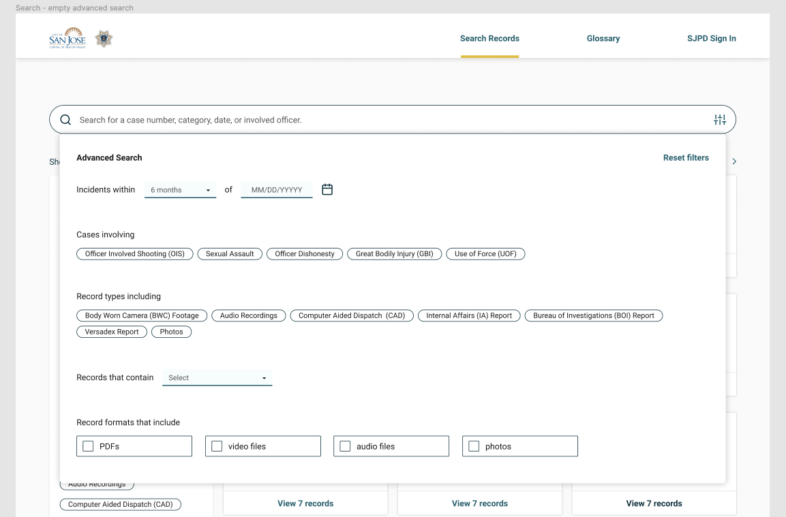
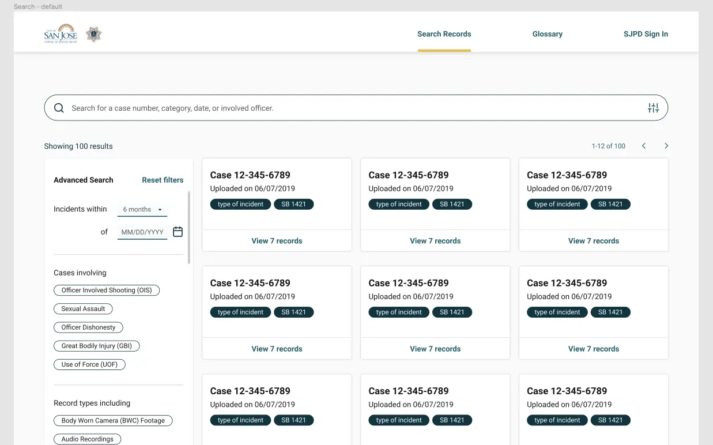
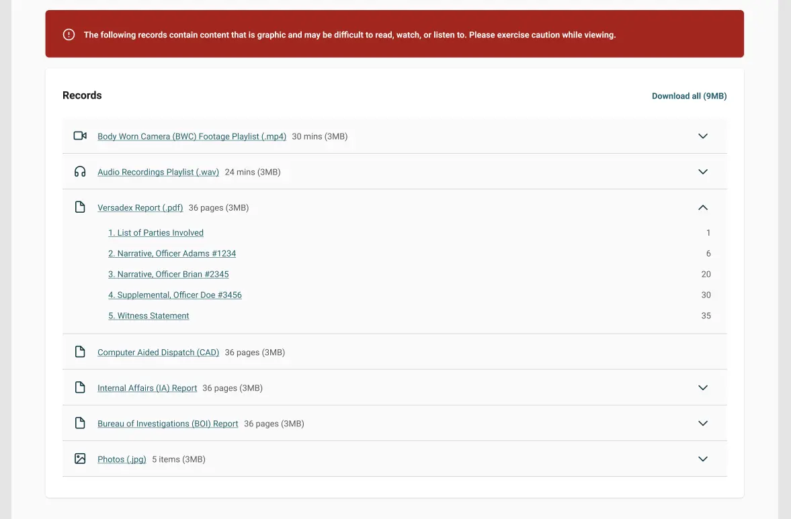
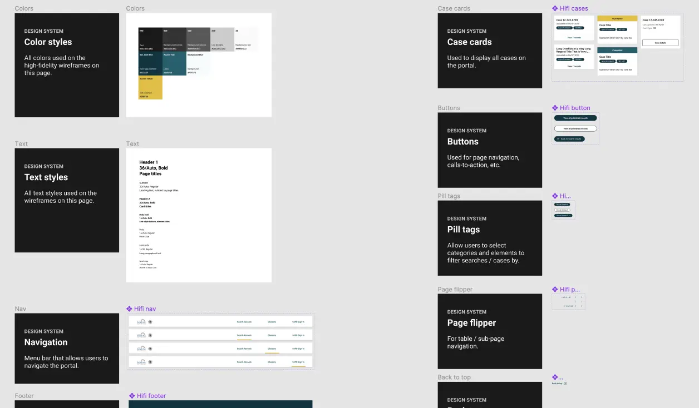
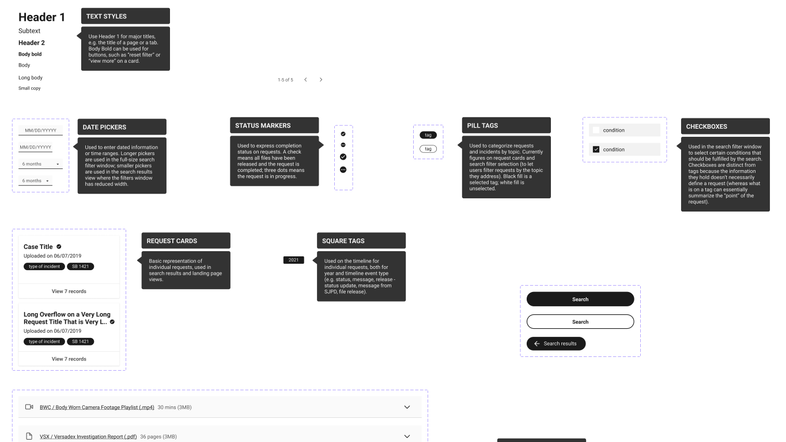

designing a scalable web portal @ san josé mayor's office of tech and innovation
overview
California's Senate Bill 1421 mandates that police departments in the state make officer misconduct records available to the public upon request. In the summer of 2021, my team (3 engineers, 1 designer, 1 legal, 1 project manager) at the San José Mayor's Office of Technology and Innovation began building a web portal where the San José Police Department (SJPD) could publish their officer misconduct records in a timely and accessible manner.
The sole designer on the team, I was responsible for everything from helping define the product features to thinking about accessibility to creating a style guide. Here, I’ll focus on one particular consideration I kept in mind throughout my 10 weeks at San José: designing for scalability.
problem
While the SJPD only had a limited amount of files ready for publication at the time of my fellowship, we knew that they were preparing many more documents for public release in due time. How could we make sure the web portal was scalable and ready to accommodate a two-fold or four-fold (or more) increase in the amount of data to be published on the site?
part 1: focus on atomic and molecular components
Because we didn't know yet how many records the SJPD would eventually need to accommodate on the portal, I had to consider how my designs would work and look if there was 5, 10, or 50 times the amount of data we had access to at the time. They had to be able to multiply cleanly. I focused my efforts on creating solid and intentional atomic and molecular components; I figured any final construction would work well if the building blocks were made well.
This applied, for example, for the 2 following elements: the search window and the file drawers.
For the search window, I needed to consider what would happen if the SJPD started using more file types or expanded their categorizations of misconduct types. Vertically stacked checkboxes wouldn’t scale well; I relied more heavily on tags, an easily-multiplied building block, instead.
The tag components also proved helpful later when I began building the cards for individual police cases.
For the files of a case, I used collapsable “drawer” components that could easily be stacked. Each drawer would contain all files of a certain type (one drawer would house all Computer Aided Dispatch files, one drawer would house all Versadex files...). This way, if the police department ever 1) uncovered more documents in a case, or 2) started storing new types of files, the portal’s design would scale smoothly to accomodate.
A less scalable alternative, which was quickly discarded, would have been to simply present the user with a list of individual links to each file.
part 2: build a design system, early
As I started using recurring components like the ones shown above, I quickly realized I would need to create a design system to house them all. This way, I could scale my design process with more ease and efficiency.
I built my first version of a design system at the earliest wireframing stage of my process, when I was working on low- to mid-fidelity wireframes. Later, as I moved to high-fidelity, I continued to expand and modify my system as components were refined and (eventually) color styles were defined.
Nearly a year after having worked on this project, I’m still trying to figure out the best way to organize components into a clean system. But regardless of my level of satisfaction with my design system in the end, it really did prove helpful to have started building one early.
conclusion
My team wasn’t able to finish building the web portal in 10 weeks, though a few of our engineers later stayed with the Mayor's Office of Technology and Innovation to continue improving the site.
It was a difficult but rewarding challenge, trying to manage the design side of our project from end to end. I wasn’t entirely happy with many aspects of my work—from the visual design to my unstructured approach to research—but it taught me a lot and gave me the chance to meet many passionate civic technologists and tech policists.
back to homepage